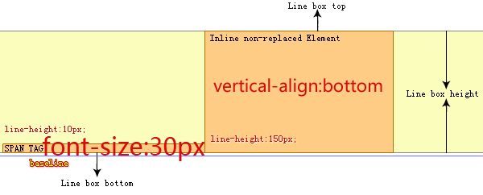
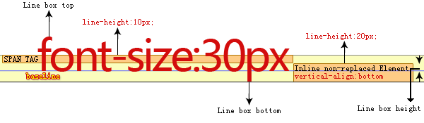
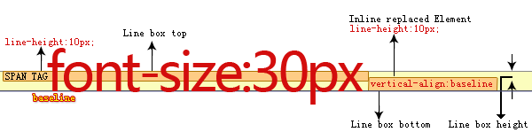

RD8009: IE6 IE7 IE8(Q) 中行框的顶边与底边位置识别有误
标准参考
关于 Line Height （行高）计算说明，请参照 W3C CSS 2.1 规范 10.8 节： http://www.w3.org/TR/CSS21/visudet.html#line-height
关于 Leading and half-leading （差异半差异） 说明，请参照 W3C CSS 2.1 规范 10.8.1 节： http://www.w3.org/TR/CSS21/visudet.html#leading
关于 Inline formatting context （行内格式化上下文）说明，请参照 W3C CSS 2.1 规范 9.4.2 节： http://www.w3.org/TR/CSS21/visuren.html#inline-formatting
关于 'line-height' 特性说明，请参照 W3C CSS 2.1 规范： http://www.w3.org/TR/CSS21/visudet.html#propdef-line-height
关于 'vertical-align' 特性说明，请参照 W3C CSS 2.1 规范： http://www.w3.org/TR/CSS21/visudet.html#propdef-vertical-align
问题描述
IE6 IE7 IE8(Q) 在超过一个行内元素排列生成行框时，识别行框的顶边和底边位置时会参照文本实际高度的顶边和底边尺寸，而不是行框内最高行内框的顶边和最底行内框的底边位置。
造成的影响
导致行框的高度比规范中规定的要高。
受影响的浏览器
| IE6 IE7 IE8(Q) |
问题分析
【注】：此问题在表现层面上与 Webkit 行框高度计算有误 问题相似，实质上 webkit 仅是计算行框高度失误，对行框顶边与底边的位置确定并无失误，因此后面的分析内容中将不再特殊说明他，如有兴趣了解更多请点击相关问题中的内容。
【注】：本文中使用的示意图均采用夸大并突出的手段表示所要说明的内容，其代表的实际框高和字号等内容与对应代码内设定值并无严格的大小对应关系。
结合 CSS 2.1 规范中行内格式化上下文、行高计算、差异半差异、'line-height' 和 'vertical-align' 特性中相关说明，可以总结出行框顶边与行框底边位置的计算方式：
- 每一个行内元素会产生一个行内框；
- 行内框会在行框内横向排列；
- 'line-height' 特性值指定了每个行内非替换元素生成的行内框的 确切 高度；行内替换元素的高度由 'height' 特性值决定；
- 文字在行内框中垂直排列，上下空隙用半差异填补；如果字号大于行内框则文字从上下方向上溢出行内框，并可能渗入到其他行框内（行框是永远不会重叠的）；
- 'vertical-align' 特性值指定了每个行内框的垂直对齐方式；
- 行框的顶边界是这一系列垂直对齐的行内框最高的顶边框，底边界是最低的底边框。
- 行框的高度是顶边界到底边界的距离。
为了更明确的理解这些概念，请以下分析代码并请观看图片说明：
<p style="padding:0; font-family:simsun;"> <span style="line-height:150px;font-size:30px;">font-size:30px</span><img style="height:150px;widht:50px;" src="1x1.gif" /> </p>
| 所有浏览器行框布局 |
|---|
 |
图中对 P 标记内 SPAN 和 IMG 标记在行内布局做了直观说明，按照默认基线对齐方式，行内替换元素 IMG 标记的基线位置在块底边，与 SPAN 标记内文字基线对齐后两个行内框产生高度差异。其中行框的顶边是两个行内框中最高的顶边—— IMG 标记的顶边，底边是最底的底边—— SPAN 标记的底边，行框的高度是这两条边之间的距离。
此例中两个行内元素产生的行内框高度一致，字体高度没有超出行内框高度，行框的顶边界和底边界容易识别，因此所有浏览器中表现一致。
变更示例，将第一个行内标记 SPAN 的字号变大行高变小，使文字溢出行内框，并且改变后一个 SPAN 标记形成的行内框垂直对齐方式，分析以下代码：
<p style="margin:0;padding:0;font-family:simsun;line-height: 10px; font-size: 30px;"> <span>line-height: 10px; </span><span style="vertical-align:bottom;line-height: 150px;">vertical-align:bottom </span> </p>
由于行框本身不可视，我们根据规范定义，将此部分代码布局变为示意图：
| IE8(S) Firefox Chrome Safari Opera |
|---|
|  |
| IE6 IE7 IE8(Q) |
 |
通过示意图可看出，IE8(S) Firefox Chrome Safari Opera 中当第一个行内框文字溢出此框垂直范围后，此框的底边界仍然有效。后一个行内元素产生的行内框使用底边对齐方式时应该对齐在上一个框的底边（即现有行框的底边），这种布局方式是符合规范的。
而 IE6 IE7 IE8(Q) 中错误的将行框底边认为是高度最大的框底边，导致实际上两个文本框在行框内产生了垂直对齐效果，这种布局是错误的。
继续变更示例，这次将后一个 SPAN 标记形成的行内框高度减小到 20px ，字号缩小到不会溢出行内框，垂直对齐方式不变。使总体效果达到使第二个行内框高度比第一个 SPAN 标记内字号小，分析以下代码：
<p style="margin:0;padding:0;font-family:simsun;line-height: 10px; font-size: 30px;"> <span>font-size: 30px; </span><span style="vertical-align:bottom;line-height: 20px;font-size: 12px;">vertical-align:bottom </span> </p>
将代码布局变为示意图：
| IE8(S) Firefox Chrome Safari Opera |
|---|
 |
| IE6 IE7 IE8(Q) |
|  |
通过示意图可看出，IE8(S) Firefox Chrome Safari Opera 中当第一个行内框文字溢出框垂直范围后，此框的底边界仍然有效。后一个行内元素产生的行内框使用底边对齐方式时应该对齐在上一个框的底边（即现有行框的底边），这种布局方式是符合规范的。
而 IE6 IE7 IE8(Q) 中错误的将行框底边认为是文字的实际底边，规范中明确说明行内框高度由 'line-height' 特性明确决定，文字溢出行内框部分不应该影响行内框高度计算，这种布局明显又是错误的。
继续变更示例，这次将后一个行内非替换标记换为 IMG 标记，此标记的高度依然比 SPAN 内字号产生的高度小，垂直对齐变更为默认的基线对齐方式。
【注】IMG 为行内替换元素，其基线位置在 IMG 框的底边。由于不同浏览器对常用行内替换标记的基线位置理解不同，本文仅对所有浏览器中均确认基线位置的 IMG 元素做对比例举。如有兴趣了解更多请点击相关问题中的内容。
分析以下代码：
<p style="margin:0;padding:0;font-family:simsun;line-height: 10px; font-size: 30px;"> <span>font-size: 30px;</span><img src="1x1.gif" style="width:5px; height:10px"/> </p>
将代码布局变为示意图：
| IE8(S) Firefox Chrome Safari Opera |
|---|
|  |
| IE6 IE7 IE8(Q) |
 |
通过示意图可看出，IE8(S) Firefox Chrome Safari Opera 中的布局方式依旧是符合规范的。
而 IE6 IE7 IE8(Q) 在此种情况下，错误的将溢出行内框的文字顶边与底边当做行框的顶边与底边，导致行框高度与文字高度一致，在多个行框存在时，垂直方向上的文字不会彼此重叠，这种布局明显又是错误的。
【注】事实上所有行内替换元素在 IE6 IE7 IE8(Q) 中均会错误的将溢出行内框的文字顶边和底边当做行框的顶与底，这里就不再一一列举对比，读者如有兴趣可自行测试。
解决方案
为了取得正常布局，建议 'line-height' 计算值设置永远大于 'font-size' 计算值设置。
参见
知识库
相关问题
测试环境
| 操作系统版本: | Windows 7 Ultimate build 7600 |
|---|---|
| 浏览器版本: |
IE6 IE7 IE8 Firefox 3.6.2 Chrome 5.0.360.4 dev Safari 4.0.5 Opera 10.51 |
| 测试页面: | line_box_top_and_bottom_edge.html |
| 本文更新时间: | 2010-08-04 |
关键字
line-box line-height height font-size 行框顶端 行框低端 字号